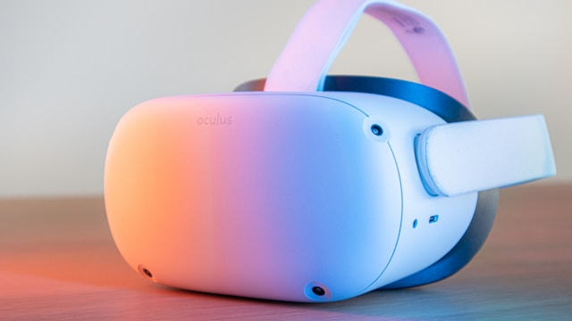

IA
IA
El auge de los Transformers en la robotica moderna
Como la arquitectura que revoluciono el lenguaje natural esta permitiendo que los robots aprendan de su entorno.
IA
Como la arquitectura que revoluciono el lenguaje natural esta permitiendo que los robots aprendan de su entorno.
IA
La nueva version del modelo de OpenAI promete razonamiento avanzado y autonomia completa.
Los algoritmos de deep learning estan revolucionando el diagnostico medico temprano.
Algoritmos que detectan enfermedades con precision superior a radiologos.
IA
Modelos computacionales que imitan el cerebro humano para tareas de reconocimiento.
Como las empresas entrenan modelos de IA sin acceder a los datos de los usuarios.
Los ordenadores cuanticos prometen resolver problemas imposibles para la computacion clasica.

TendenciasLa conectividad de alta velocidad esta transformando la infraestructura urbana global.
Microservicios, contenedores y orquestacion estan redefiniendo como se construye software.
Los robots para el hogar finalmente cumplen promesas de hace decadas con IA generativa.
IA
Tutores virtuales que adaptan el contenido al ritmo de aprendizaje de cada estudiante.
El modelo de seguridad que nunca confia y siempre verifica esta ganando terreno corporativo.
Gestionar miles de contenedores en produccion requiere herramientas cada vez mas sofisticadas.
Las oficinas virtuales en realidad virtual prometen hacer el teletrabajo mas inmersivo.
IA
Empresas que anticipan tendencias del mercado mediante modelos predictivos avanzados.
Dispositivos vestibles que monitorean salud en tiempo real con precision medica.
Acercar el procesamiento al usuario final reduce latencia y mejora la experiencia.
Las tecnicas de manipulacion psicologica evolucionan con deepfakes y IA generativa.
Herramientas de CI/CD potenciadas por IA que detectan errores antes de que ocurran.
La fusion de mundos fisico y digital promete cambiar la forma en que interactuamos.
Los Transformers han revolucionado la robotica moderna de una manera que hace apenas cinco anos parecia ciencia ficcion. Originalmente disenados para el procesamiento de lenguaje natural, estos modelos de atencion han demostrado ser extraordinariamente efectivos para el control de movimientos roboticos, permitiendo que las maquinas aprendan de su entorno de forma autonoma.
La arquitectura de atencion multiple ha permitido que los robots procesen simultaneamente informacion visual, tactil y de movimiento. Empresas como Boston Dynamics y Tesla han adoptado estos modelos para sus lineas de robotica avanzada.
El impacto en la industria manufacturera es enorme: lineas de produccion completas ahora pueden adaptarse dinamicamente sin reprogramacion manual.
La nueva version del modelo de OpenAI promete razonamiento avanzado y autonomia completa. ChatGPT-5 integra capacidades de razonamiento multietapa que le permiten resolver problemas complejos sin intervencion humana.
Los asistentes virtuales basados en esta tecnologia pueden ahora mantener conversaciones contextuales durante horas, recordando preferencias y adaptando sus respuestas al estilo de cada usuario.
La empresa asegura que el modelo ha superado pruebas de razonamiento logico y creativo que anteriormente solo los humanos podian resolver de manera consistente.
Modelos computacionales que imitan el cerebro humano para tareas de reconocimiento. Las redes spiking procesan informacion de forma temporal, similar a como lo hacen las neuronas biologicas.
Esta tecnologia promete reducir el consumo energetico de los centros de datos de IA en un 90%, resolviendo uno de los principales problemas ambientales de la inteligencia artificial.
Investigadores del MIT y DeepMind estan liderando los avances en esta area con resultados prometedores en robots autonomos.
Tutores virtuales que adaptan el contenido al ritmo de aprendizaje de cada estudiante. La IA generativa esta transformando la educacion con planes de estudio personalizados.
Plataformas como Khan Academy y Coursera ya integran asistentes de IA que explican conceptos de multiples formas hasta que el estudiante los comprenda.
Los estudios muestran que los estudiantes que utilizan tutores de IA mejoran sus resultados en un 40% promedio.
Empresas que anticipan tendencias del mercado mediante modelos predictivos avanzados. El analisis predictivo esta transformando la toma de decisiones empresariales.
Retailers como Amazon y Mercado Libre utilizan modelos predictivos para optimizar inventarios y reducir costos logisticos en un 25%.
Los modelos de series temporales con deep learning ahora pueden predecir demanda con precision superior al 95% a corto plazo.